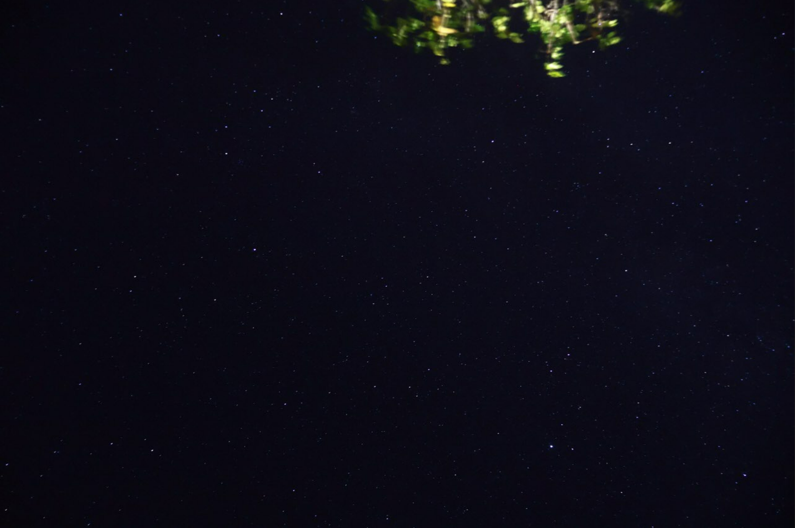
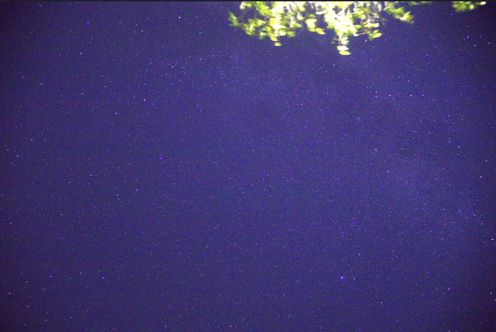
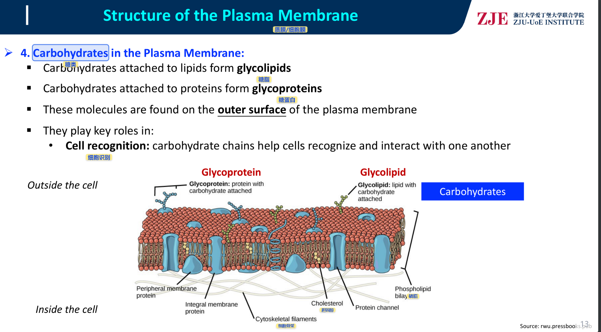

opencode辅助星空堆栈
运用opencode处理lights文件，Siril进行校准+叠加+去星，StarNet去星，scipy降噪+锐化，硬件加速Screen Composite合成的完整处理流程。
查看详情欢迎来到我的个人主页
访问我的 GitHub
运用opencode处理lights文件，Siril进行校准+叠加+去星，StarNet去星，scipy降噪+锐化，硬件加速Screen Composite合成的完整处理流程。
查看详情



通过opencode开发各种小工具和应用，提升编程能力和问题解决能力。
热爱数学学习和探索，享受数学逻辑推理和解题的乐趣。
喜欢摄影创作和后期处理，通过技术手段提升照片艺术效果。
通过绘画表达创意和情感，享受创作过程和艺术创作。
喜欢观察和饲养各种动植物，了解自然生态和生命之美。